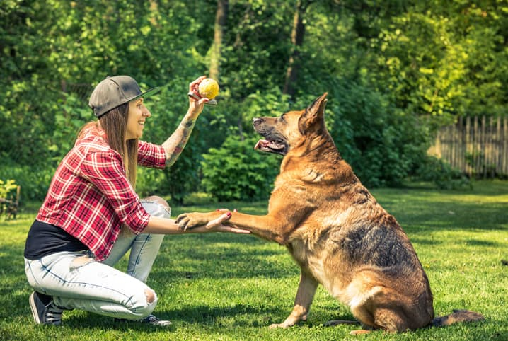
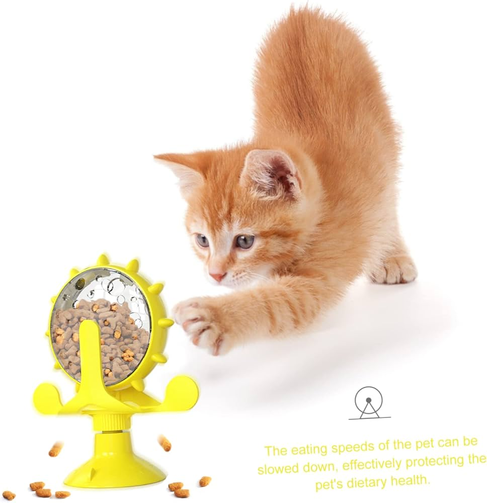

Como cuidar do seu cão no inverno

Os meses frios podem ser desafiadores para nossos amigos peludos. Aqui estão algumas dicas para manter seu cão confortável:
- Aqueça o ambiente: Garanta que seu cão tenha um lugar quentinho para descansar, longe de correntes de ar.
- Roupas para cães: Considere usar um casaco para cães de pelo curto ou sensíveis ao frio.
- Cuidado com o gelo: Evite que seu cão ande em áreas com gelo, que podem causar lesões.
Lembre-se de que, mesmo no inverno, os passeios são importantes! Mantenha os passeios curtos, mas frequentes.
5 Brinquedos DIY para Gatos

Brincar é essencial para o bem-estar dos gatos. Aqui estão cinco ideias fáceis de brinquedos que você pode fazer em casa:
- Bolinha de papel: Faça uma bolinha com papel amassado e observe seu gato se divertir!
- Varinha com penas: Amarre penas em uma corda presa a uma vara para criar um brinquedo interativo.
- Caixa de papelão: Gatos adoram explorar. Uma caixa pode se transformar em um esconderijo divertido.
- Brinquedo com garrafa PET: Coloque ração dentro de uma garrafa PET para que o gato descubra como pegá-la.
- Fita adesiva: Grude pedaços de fita adesiva em uma superfície e deixe seu gato brincar tentando pegar.
Esses brinquedos são simples de fazer e garantem horas de diversão para o seu felino!
Histórias de adoção: O Max e sua nova família
Max era um cão abandonado que encontrou abrigo em um canil. Após meses de espera, ele finalmente foi adotado por uma família amorosa.
Desde que chegou à sua nova casa, Max se adaptou rapidamente. Seus novos donos contam que ele é muito carinhoso e adora brincar no quintal. Veja como a adoção pode transformar a vida de um animal:
"Adotar um animal é uma das melhores decisões que já tomei. Max trouxe alegria e amor para nossa casa!" - Família Silva
A adoção é uma forma de dar uma segunda chance a um animal e, ao mesmo tempo, enriquecer a vida de uma família.